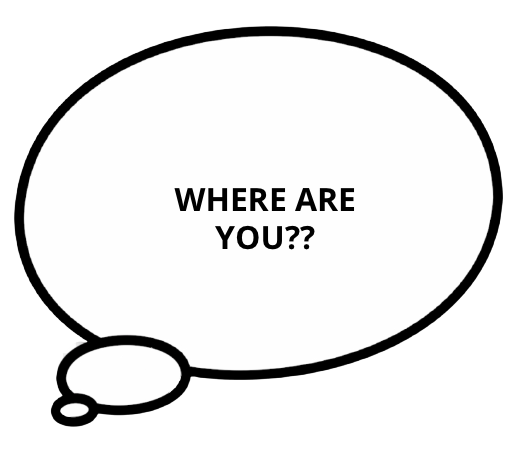

Dogname decided to run across the field and not risk going to the house. With animal control close behind they need to find their way back to civilisation fast! Dogname sees another fence with people walking on the other side. Dogname squeezes through the gap in the fence slowing the animal control officer behind them. As they are running down the footpath, Dogname starts to hear a familiar voice calling their name! “Dogname! Where are you?” Dogname hears in the distance. Just as Dogname is about to run towards the sound animal control catches up to them and jumps infront of their path! Does Dogname run towards the sound and risk getting caught or run in the opposite direction of the animal control officer and hide till the coast is clear?